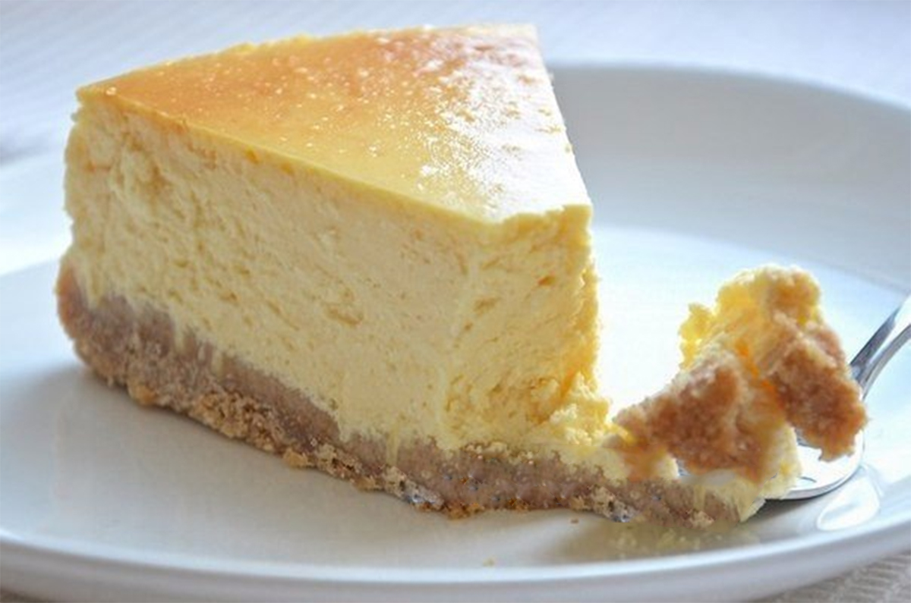

Toorjuustukook valge šokolaadiga

Põhi
| Koostisosa |
Kogus |
Mõõtühik |
| Digestive küpsised |
200 |
g |
| Taluvõi |
50 |
g |
Täidis
| Koostisosa |
Kogus |
Mõõtühik |
| Valge šokolaad |
250 |
g |
| Toorjuust |
400 |
g |
| Hapukoor |
200 |
ml |
| Muna |
2 |
tk |
| Vanilliekstrakt |
1 |
tl |
Põhi
- Purusta küpsised ja sulata või.
- Sega sulatatud või ja küpisisepuru ühtlaseks massiks.
- Suru segu 22-24cm läbimõõduga koogivormi.
- Soovi korral eelküpseta põhi 200kraadises ahjus 10 minutit.
Täidis
- Pehmenda suures kausis toorjuust.
- Lisa toorjuustule hapukoor, munad ja vanilliekstrakt ning segusta.
- Sulata valge šokolaad veevannis.
- Lisa valge šokolaad ülejäänud segule.
Küpsetamine
- Küpseta 160-kraadises ahjus 1 tund.
- Jahuta korralikult enne vormist eemaldamist!
- Võimaluse korral jahuta kooki enne serveermist külmikus.